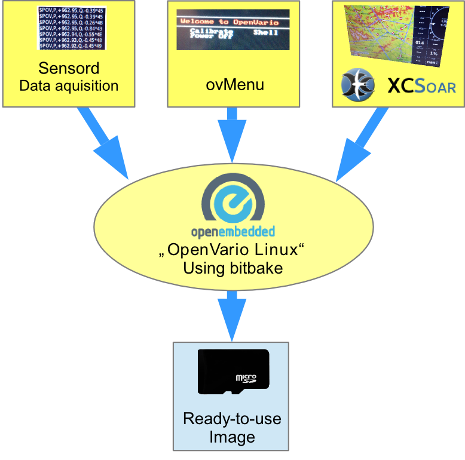
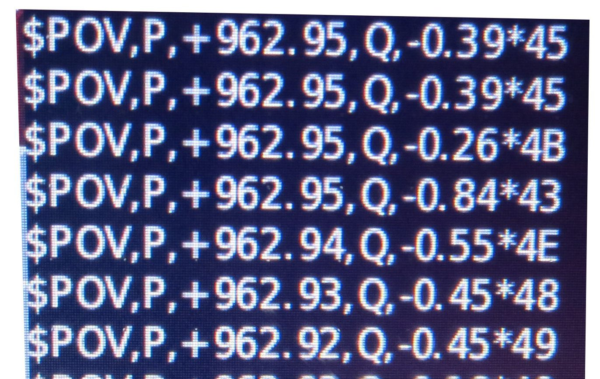
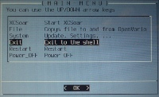
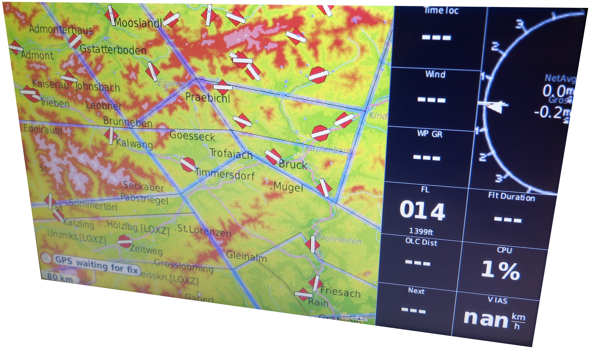

Software Overview
The flight computer uses several different software components. Some of these components are taken from external sources. We make sure however, that all software used in this project is licensed under copyleft or permissive terms.
The OpenVario Flight computer is based on the Cubieboard 2 which integrates a Allwinner A20 SoC (Dualcore Cortex A7 processor). To get the best performance a Linux with DirectFB is used.

You can get a ready-to-use image for microSD-cards here: Openvario-MicroSD-Image. If you want to have deeper insights into the OpenVario-Software, check out the following sections:
Operating System
The operating system used is based on the Openembedded framework. For details see the Openembedded website.
Sensor daemon

The sensor daemon is a program accessing the hardware sensors and providing the data to the flight computer applications. If you are interested in the details inside, have a look at Sensor Daemon Details
Vario daemon
The vario daemon is a program being responsible for Audio-Vario and Speed to Fly, controlled by the XCSoar User Interface. Find more information about the Variod.
Menu Front - End

Flight Computer Application XCSoar

NMEA-Communication
The communication between sensor daemon, vario daemon, XCSoar and external equipment (e.g. Flarm, IGC-Logger…) is realized using the NMEA-protocol. Find more detailed information about the NMEA-Protocol of OpenVario.